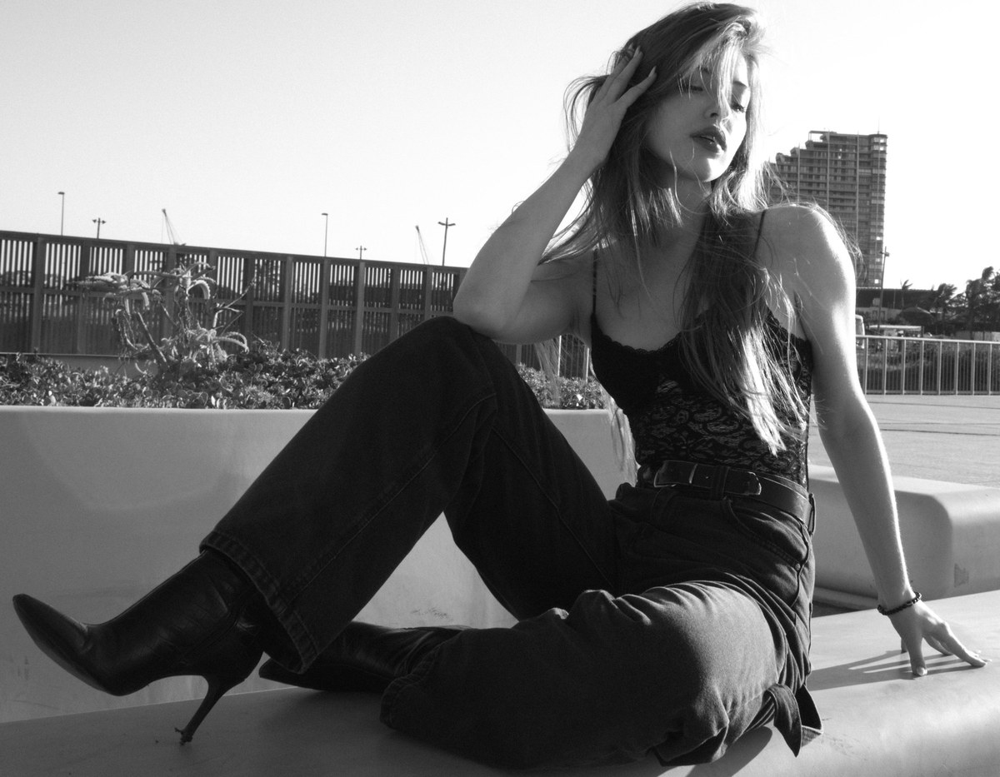

I shoot
real people,
bad light,
and long days.
I'm Alwin — the photographer who takes your booking. Not a studio, not a team, not a middleman. Portraits, couples, families and social content, shot on location across Gauteng, delivered in about a week.

This is where my face goes.
I'm not putting a client's photograph on this page and calling it me. The slot is here, empty, until I shoot it properly — one window, one wall, twenty minutes.
- ShotFace and shoulders, camera at eye height. Not from above, not from the side.
- LightOne window. No flash, no ring light, no softbox — available light, in my own hands.
- FrameVertical, 2:3, at least 1600px on the long edge.
- WearWhat I actually shoot in. A plain shirt. Nothing styled.
- ExpressionNot smiling on cue. The frame I use on my own Instagram, unchanged.
What I shoot — and what it costs
Portraits & headshots
R1,200 · 30 min · 1 outfit · 1 location
Matric farewells, headshots, quick portraits. Fifteen edited high-res files,
a clothing guide, and location suggestions before the day.
Couples & small families
R2,200 · 60 min · 2 outfits · 1–2 locations
The one most people book. Forty edited images, vertical crops ready for
Reels, location scouting and a shot list, and one 5×7 fine art print.
Maternity, engagements & full sessions
R3,500 · 90 min · 2–3 outfits · multiple locations
Seventy edited images plus a black & white timeless set, and two fine art
prints. The longest and most prepared package I offer.
Social & creators
R1,800 · 45 min · 2 outfits · 1 location
Thirty edited images and fifteen Reels-ready vertical crops, a 48-hour
sneak peek, pose coaching for video, and a content calendar template.
Add-ons, stated up front
Extra 30 minutes R600 · extra location R400 · 48-hour rush
delivery R400 · extra 5×7 print R150 · 20-page fine art album
R1,200 · travel beyond 25 km R5/km.
Prints are included as listed; commercial use of any image needs a separate
licence, and I will tell you its cost before you book, not after.
What happens after you enquire
1 · You send a message
WhatsApp is fastest. Tell me the date, roughly what kind of shoot, and where — a location changes the price, because travel is R5/km past the first 25 km.
2 · I reply within 24 hours
I shoot evenings and weekends, so those days are the busiest — but every enquiry gets an answer the next working day. A real number, not an auto-reply, and a straight "I can't make that date" if I can't.
3 · You get a written quote
Which package, what the day includes, what it costs. What you see is what you pay — the add-ons above are the full list, so there is no call-out fee invented on the day.
4 · Half up front holds the date
50% deposit by EFT, balance before the gallery is delivered. Reschedule free with 7 days' notice; inside 7 days it's R500 and the deposit transfers. Severe weather on an outdoor shoot is a free reschedule, and I carry a backup indoor location.
5 · Files arrive in 5–7 business days
A private online gallery with high-res and web downloads and a print release for personal use — Starter, Essential and Social in 5 business days, Signature in 7. Commercial use of any image is licensed separately; I'll quote that before you book, not after.
The kit I shoot on
- Body
- Canon EOS 4000D
- Glass
- 18–55mm kit
- Support
- Tripod, flash
- Backup
- Indoor location
- Based in
- Gauteng
- Working since
- 2019
- Coverage
- On location
- Reply time
- Next working day
- Deposit
- 50% by EFT
- Delivery
- 5–7 business days
Available for bookings
Tell me the date.
I'll tell you
the price.
Send a date, a place and roughly what you need. You'll have a written quote the next working day, and a straight answer if I'm not free.
Alwin · Shutterhaus Visuals
Gauteng, South Africa